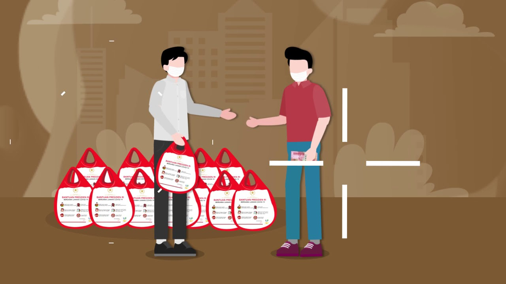

|

Bantuan Sosial adalah bantuan berupa uang, barang dan jasa kepada individu atau kepada individu, keluarga, kelompok dan masyarakat miskin, tidak mampu dan kerentanan sosial
Pengertian Bansos bisa di cek di Undang-Undang Nomor 14 Tahun 2019 tentang Pekerja Sosial, Peraturan Presiden Nomor 63 Tahun 2017 tentang Penyaluran Bantuan Sosial Secara Non Tunai dan Permendagri Nomor 77 Tahun 2020 tentang Pedoman Pemberian Hibah dan Bantuan Sosial Yang Bersumber dari Anggaran Pendapatan dan Belanja Negara.
Berdasarkan Permendagri Nomor 77 Tahun 2020, pemberi bansos adalah Satuan Kerja pada kementerian atau lembaga pada Pemerintah Pusat dan/atau Satuan Kerja Perangkat Daerah pada Pemerintah Daerah yang tugas dan fungsinya melaksanakan program penanggulangan kemiskinan yang meliputi perlindungan sosial, jaminan sosial, pemberdayaan sosial, rehabilitasi sosial, dan pelayanan dasar
Sedangkan Penerima bansos adalah seseorang, keluarga, kelompok atau masyarakat miskin, tidak mampu, dan/atau rentan terhadap risiko sosial. Saat ini data penerima bansos dapat dicek dengan mudah melalui Sistem Cek Bansos Kementerian Sosial.
|